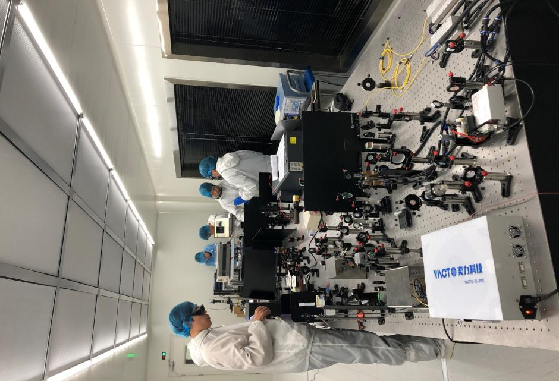

学院通知 · 科研创新
四川大学电子信息学院诚邀全球英才
发布时间：2023-03-16
一、 学校及学院简介 岷峨挺秀，锦水含章。 巍巍学府，德渥群芳。 四川大学是教育部直属全国重点大学，是国家布局在中国西部的重点建设高水平研究型综合大学，是国家“双一流”建设A类高校。学校历史悠久，地处“天府之国”成都，是全国学科门类最齐全、办学规模最大的高校之一，现有学科型学院系38个和附属医院4所，覆盖了文、理、工、医等12个门类，拥有国家重点学科46个、国家临床重点专科45个；拥有博士学位授权一级学科49个、专业学位授权点38个、博士后流动站39个；拥有国家重大科技基础设施、国家重点实验室、国家工程技术研究中心等国家级科研基地21个。未来，学校将始终肩负集思想之大成、育国家之栋梁、开学术之先河、促科技之进步、引社会之方向的历史使命与社会责任。 四川大学电子信息学院组建于1998 年，学院的变革和发展可追溯到1954 年，是一个具有较长历史又蓬勃发展的学科型学院。学院现设有信息与通信工程系、光学工程系、电子科学与技术系和电子信息技术专业实验中心、光电技术专业实验中心。 学院现有在编教职工128人，其中中国工程院院士1人、国家级重大人才项目入选者2人，国家级重大人才青年项目入选者1人，科睿唯安高被引学者1人，新世纪百千万人才工程国家级人选1人、教育部跨世纪优秀人才1人，教育部新世纪优秀人才5人，四川省学术和技术带头人及后备人选18人，四川省突出贡献专家2人，成都市突出贡献专家1人，四川省人才项目入选者9人，博士生导师41人，硕士生导师34人，教授（级）38人（含王俊），副教授（级）45人，专任教师104人。91%的教师有海外留学和学术交流的经历。学院已经构建了一支以优秀学科带头人为核心、以中青年学者为骨干的学术梯队和以中青年教师为主体的师资队伍。 学院现有研究领域涉及信息与通信工程、 电子科学与技术、光学工程、物理学、控制科学与工程等一级学科，形成了以应用电磁学、图像信息、智能控制、群体智能、新型激光-光电子、三维传感与机器视觉、激光技术、信息显示、中红外超快激光技术和激光微纳工程十大研究团队为核心的科研队伍体系。 学院现有信息与通信工程、光学工程和电子科学与技术3个一级学科博士学位授权点，电子信息工程博士招生领域；硕士点8个（ 通信与信息系统、信号与信息处理、电路与系统、电磁场与微波技术、无线电物理、智能信息系统、光学工程、物理电子学）；电子信息专业硕士点1个。学院现有博、硕士研究生900余人，本科生1600余人。 近年来，学院依托无线能量传输教育部重点实验室和四川省光学重点实验室，形成了强激光及相关技术、无线能量传输、复杂系统电磁兼容、通信抗干扰等具有特色的研究方向。近年来，学院主持和承担了国家自然科学基金重大项目、国家安全重大基础研究、国家重点基础研究（973）、国家重点研发计划、国家重大专项、国家杰出青年基金、国家“863”、国家自然科学重点项目等国家级项目。近五年，有1000多篇论文被SCI检索，授权发明专利343项。在高功率固体激光、微波化学、结构照明型三维成像理论与应用研究等领域的研究已达到国际先进水平，获国家技术发明二等奖3项，省部级奖励20多项。 二、 招聘岗位及待遇 1. 讲席教授、荣誉教授 ⟡ 岗位条件： 在服务国家重大战略需求和经济社会发展等方面发挥重大作用，承担国家重大战略任务和“双一流”建设重要任务，具有带领学科赶超或引领国际先进水平能力的战略科学家和学术大师。 ⟡ 待遇： 提供具有竞争力的薪酬待遇、服务保障，一事一议。 2. 海纳特聘教授 ⟡ 岗位条件： 取得国内外同行公认的重要成就，在学科建设、人才培养、科学研究、技术创新等方面做出重大贡献的领军人才、知名专家。 ⟡ 待遇： 提供具有竞争力的薪酬待遇、完备的服务保障。 3. 青年人才 1 ）海纳青年学者 ⟡ 岗位条件： 创新发展潜力大，取得标志性学术成果，具有卓越的科研攻坚和科技创新潜力的优秀青年人才。 ⟡ 待遇： 入选四川省“天府峨眉计划”项目者，由四川省提供50万元资助，并可申请天府英才A卡；入选成都市“蓉漂计划”者，成都市提供最高300万元资助；年薪不低于52万元（不包括单位缴纳的五险一金部分），特别优秀者一事一议；除国家和四川省提供的补贴外，学校提供最高105万元安家费、购房及租房补贴；协助解决子女入托入学问题；川大附属华西医院提供优质的医疗服务保障。 2 ）特聘正高级岗位 ⟡ 岗位条件： 具备较高学术造诣，获得国内外一流大学博士学位，原则上科研能力和学术水平达到学校专职科研系列研究员条件的青年人才。年龄一般不超过40周岁。 ⟡ 待遇 ： 全职聘用，首聘4年，年薪33万元（不包括单位缴纳的五险一金部分），同时可申报四川大学“双百人才工程”计划，入选后年薪39-50万元；学校提供20-45万安家费、购房及租房补贴；学校提供科研启动经费50-100万元，学院支持部分面议；可申请四川省、成都市人才计划，入选者最高可获得300万元资助；协助解决子女入托入学问题；川大附属华西医院提供优质的医疗服务保障。 3 ）特聘副高级岗位 ⟡ 岗位条件： 具备一定学术造诣和发展潜力，获得国内外一流大学博士学位，原则上科研能力和学术水平达到学校专职科研系列副研究员条件的青年人才。年龄一般不超过35周岁。 ⟡ 待遇： 全职聘用，首聘3年，年薪22万元（不包括单位缴纳的五险一金部分），安家费按照学校相关规定执行，同时可申报四川大学“双百人才工程”B计划，入选后年薪39万元；可申请四川省、成都市人才计划，入选者最高可获得300万元资助；协助解决子女入托入学问题；川大附属华西医院提供优质的医疗服务保障。 4 ）专职博士后 ⟡ 岗位条件 ：具有国内外高水平大学博士学位；在本领域内有较强的科研能力和发展潜力，具备独立研究能力和良好的团队协作能力，年龄一般不超过35周岁。年龄不超过35周岁。 ⟡ 待遇 ：聘期及薪酬按学校相关规定，完成国家博士后进站后可申请四川省、成都市提供两年共18万元的日常经费资助。专职博士后享有学校专任教师同等的学术待遇和职称晋升等待遇。学校为专职博后设立了竞争性的“四川大学专职博士后研发基金”（8-20万元），鼓励专职博士后申请国家级和省部级博士后基金。符合学校相关政策者，可申请学校周转房 。 三、 招聘方向 通信与信息系统、信号与信息处理、电路与系统、电磁场与微波技术、无线电物理、模式识别与智能系统、光学工程、光学、物理电子学等专业。 四、 联系方式 有意者可注册我校人才招聘系统（https://recruitment.scu.edu.cn/#/）并将个人简历（包含学习经历、工作经历、科研成果、主持项目和荣获奖励等）及相关证明材料发送至邮箱wxling@scu.edu.cn。 学院联系人：吴老师 学院电话：028-85460933 学院邮箱：wxling@scu.edu.cn 学院网址：https://eie.scu.edu.cn/index.jsp 学校人才办联系方式： 郭老师028-85467055 学校人才办网址： h
